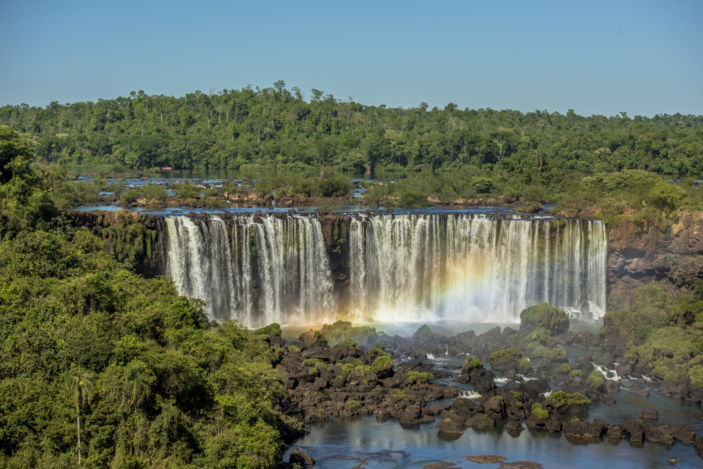
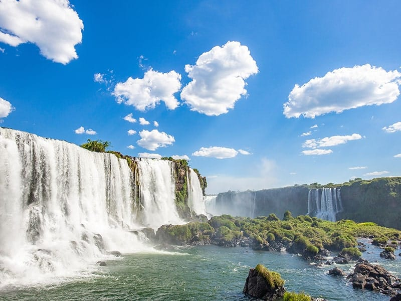

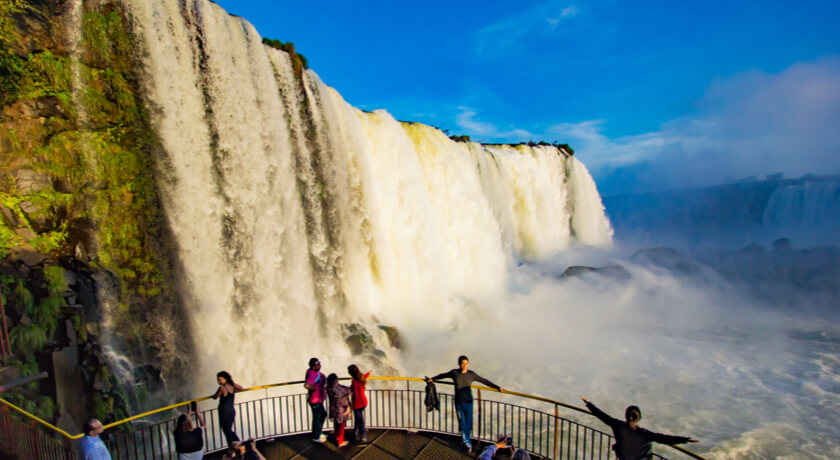
Olá, seja bem vindo ao nosso guia turístico!
Vamos te mostrar alguns dos melhores pontos turísticos para visitar pelo Brasil.
>O Cristo Redentor é uma esteátua colossal de Jesus Cristo localizada no topo do Morro do Corcovado, na cidade do Rio de Janeiro. Inaugurado em 12 de outubro de 1931, o monumento é um dos símbolos mais icônicos do Brasil, um grande marco do Cristianismo e uma das Sete Maravilhas do Mundo Moderno. Dados Técnicos Altura Total: 38 metros (30 metros da estátua e 8 metros apenas do pedestal), o que equivale a um prédio de 13 andares. Peso: Apenas a cabeça pesa cerca de 30 toneladas. Estrutura: Feito em concreto armado e revestido externamente por milhares de triângulos de pedra-sabão, material altamente resistente. Localização: Fica a 710 metros acima do nível do mar, no coração do Parque Nacional da Tijuca. História e ConstruçãoOrigem da Ideia: A proposta inicial para erguer um monumento religioso no local surgiu em 1859 pelo padre francês Pierre Marie Boss e foi resgatada pela Princesa Isabel em 1888. Idealizadores: O projeto foi desenhado pelo engenheiro brasileiro Heitor da Silva Costa, com cálculos do engenheiro francês Albert Caquot, rosto esculpido pelo francês Paul Landowski e projeto pictórico de Carlos Oswald.Financiamento: Diferente de um mito popular, o monumento não foi um presente da França. Ele foi inteiramente financiado por doações da população brasileira, organizadas pela Igreja Católica na década de 1920
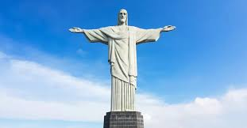
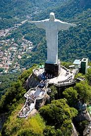
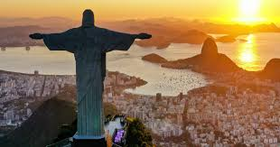
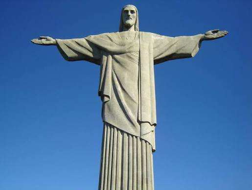
Um dos pontos mais visitados do Rio de Janeiro, um passeio que não pode falta para quem visita o rio.
Com certeza aqui voçe vai tirar belas fotos.
Praia não pode falta, ainda mais quando se fala de Rio de janeiro, que tem uma das praias mais famosa do Brasil
Uma vista inesquesivel, um dos lugares mais visitas e comentados do RJ, conta com restaurante, bar e uma noite bem agitada
Se voçe ama conhecer as cidades, os centros vai amar Copacabana, principalmentea noite, que conta com muitos barzinhos e restaurantes
As Cataratas do Iguaçu são um conjunto de 275 quedas d'água no Rio Iguaçu, localizadas na fronteira entre o Brasil (Paraná) e a Argentina (Misiones). Reconhecidas como uma das 7 Maravilhas Naturais da Terra e Patrimônio Mundial da Humanidade, destacam-se pela imponência, biodiversidade e conservação da Mata Atlântica.
Dados Geográficos e AmbientaisExtensão: O rio atinge quase 3 km de largura no trecho das quedas. Altura: As quedas variam de 60 a 82 metros de altura. Garganta do Diabo: É a maior e mais impressionante queda, formando um abismo em formato de "U" onde deságua a maior parte do volume do rio. Biodiversidade: Estão abrigadas principalmente no Parque Nacional do Iguaçu (Brasil) e no Parque Nacional Iguazú (Argentina), somando mais de 250 mil hectares de floresta subtropical.



Gramado é um município do estado do Rio Grande do Sul, localizado na Serra Gaúcha. Famosa por seu clima frio, arquitetura estilo enxaimel e forte influência europeia, é um dos principais destinos turísticos do Brasil. A cidade destaca-se por sua ampla infraestrutura voltada para o turismo. Gramado é uma cidade com uma estância de montanha situada no estado mais a sul do Brasil, Rio Grande do Sul. Influenciada pelos colonos alemães do século XIX, a cidade possui um toque bávaro com chalés alpinos, chocolateiros e lojas de artesanato. Gramado é também conhecida pelas suas exibições de luzes de Natal e pelas hortênsias em flor na primavera. O Lago Negro disponibiliza alugueres de barcos e caminhadas na floresta, enquanto as montanhas da Serra Gaúcha possuem trilhos de caminhada e de alpinismo.
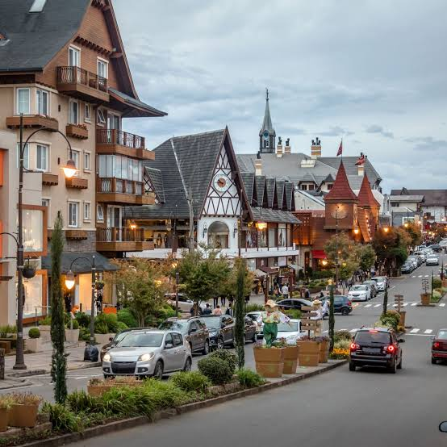
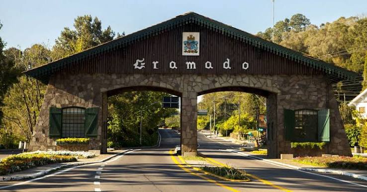
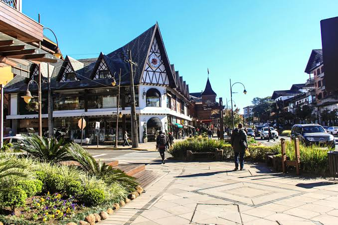
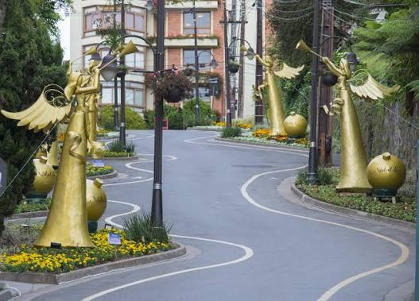